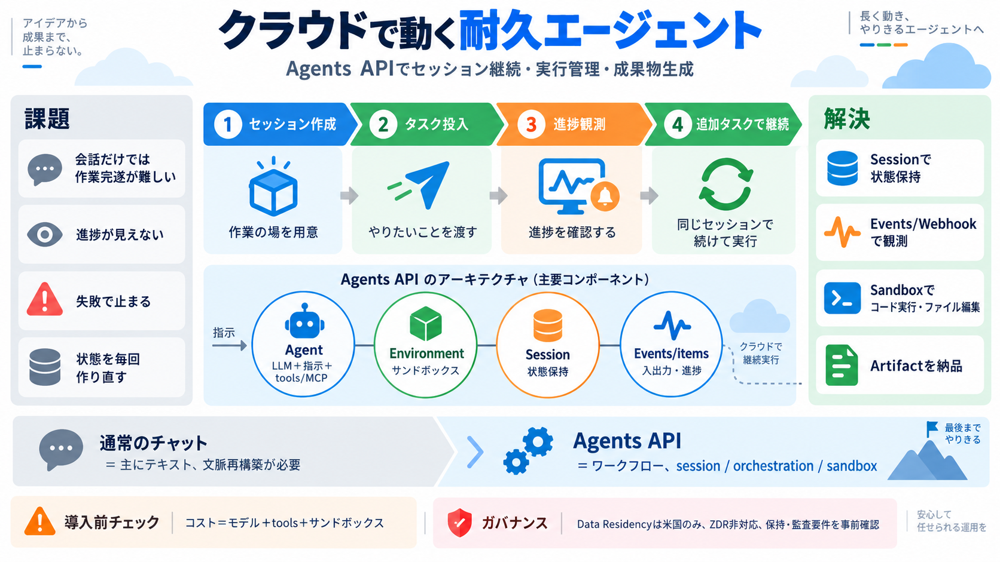

OpenAI Pricing 2026: Plans, Spend Data, and How to Pay Less
| Service | Pricing | --- | | Web Search | $10 per 1,000 calls (search content tokens free) | | Containers (Code Execut…

OpenAIのAgents APIを使い、サンドボックス実行とセッション継続を備えた“耐久性のある”エージェントを、クラウド上で構築・運用します。
調査・再現・編集・成果物生成を“途中からでも続けられる”設計が必要で、単なるチャット入出力では運用が崩れがちです。
アプリ側は「モデル・指示・ツール/MCP・実行環境」を決め、OpenAI側はセッション管理・オーケストレーション・回復まで面倒を見ます。
エージェント（LLM+指示+ツール/MCP）、環境（サンドボックス等）、セッション（状態保持）、イベント/アイテム（入出力）で全体像を把握します。
単なる回答ではなく、サンドボックス上でコード実行・ファイル編集・外部接続（MCP等）を行い、artifact（成果物）を生成できます。
セッションを作成し、準備完了後にタスク投入し、ストリーミング/Webhookで進捗や追加入力を把握し、同じセッションに追加タスクで継続します。
セッション状態が維持されるため、会話履歴を毎回作り直さずに、長い調査・修正ワークフローを段階的に進めやすくなります。
チャットAPIはテキスト入出力中心ですが、Agents APIはセッション状態・進捗イベント・サンドボックス実行・連携機能を含めて進行を管理します。
基本は選択したモデルのAPIレートで課金され、加えてOpenAIツールやOpenAIホストのサンドボックスも標準レートで課金されます。
実コストは、どのtools/MCPや環境タイプを使うかで変わる可能性があります。
データレジデンシは米国のみ対応で、Zero Data Retention（ZDR）には対応していません。セルフホスト型サンドボックス選択でもZDR適格にならないと明記されています。
“durable”とデータ制約（レジデンシ/ZDR）が、最初に効いてくる判断軸です。
Agents APIは管理された実行ハーネスとして強力ですが、この断片だけではイベント形式や失敗時回復、権限モデルの詳細が不足します。導入前にガバナンスと仕様確認を補完して設計に落とすのが安全です。
| Service | Pricing | --- | | Web Search | $10 per 1,000 calls (search content tokens free) | | Containers (Code Execut…
Quick Answer OpenAI API pricing is billed per million tokens, and the ladder just moved. After OpenAI's July 30, 2026 p…
OpenAI API pricing is based on tokens, with separate rates for input and output. Costs vary by model, but pricing is typ…
Advanced data privacy with custom data retention policies, encryption at rest and in transit, and no training on your bu…
Navigate to the OpenAI Usage Dashboard to track your spending in real time. OpenAI provides detailed logs broken down by…